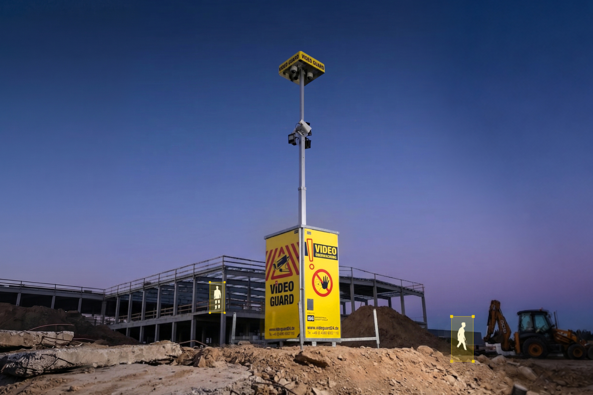

Baustellen sind komplexe und risikoreiche Arbeitsumgebungen. Als Bauleiter tragen Sie doppelte Verantwortung: für die Sicherheit der Beschäftigten und den Schutz von Maschinen, Materialien und Infrastruktur vor Schäden, Diebstahl und unbefugtem Zugriff.
Dieses Whitepaper richtet sich gezielt an Bauleiter und bietet eine kompakte, praxisnahe Auffrischung zu zentralen Themen der Arbeitssicherheit und Baustellensicherung.
Kostenlos herunterladen Angebot anfragen
Dieses Whitepaper bündelt die drei Bereiche, die auf jeder Baustelle zusammenspielen: rechtliche Pflichten, Personensicherheit und der Schutz von Sachwerten. So erhalten Sie eine klare Orientierung für Entscheidungen im Alltag und für eine dauerhaft professionelle, rechtssichere Organisation Ihrer Baustelle.
Welche Verantwortung Sie konkret tragen, welche gesetzlichen Vorgaben relevant sind und welche Pflichten auf der Baustelle nicht übersehen werden dürfen.
Von der Gefährdungsbeurteilung über PSA bis zum Notfallmanagement: Diese Perspektive hilft, Mitarbeiterschutz im Baustellenalltag konsequent mitzudenken.
Wie Sie Maschinen, Geräte, Materialien und die gesamte Baustelleneinrichtung wirksam vor Diebstahl und Vandalismus schützen, besonders außerhalb der Arbeitszeiten.

Seit 2006 steht VIDEO GUARD für modernste Videoüberwachungstechnologie, entwickelt und produziert in Deutschland. Mit Sitz in Hesel kombinieren wir High-End-Hardware mit intelligenter Software, um Videoüberwachung auf höchstem Niveau zu garantieren.
Unser Ziel: Ihre Objekte zuverlässig sichern – Tag und Nacht, bei jedem Wetter, überall.
Seit 2006 steht VIDEO GUARD für modernste Videoüberwachungstechnologie, entwickelt und produziert in Deutschland. Mit Sitz in Hesel kombinieren wir High-End-Hardware mit intelligenter Software, um Videoüberwachung auf höchstem Niveau zu garantieren.
Unser Ziel: Ihre Objekte zuverlässig sichern – Tag und Nacht, bei jedem Wetter, überall.